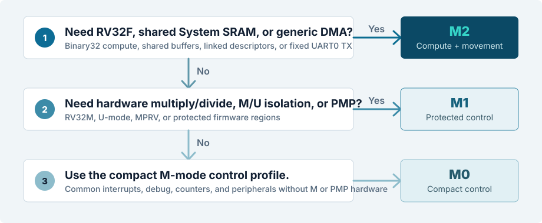
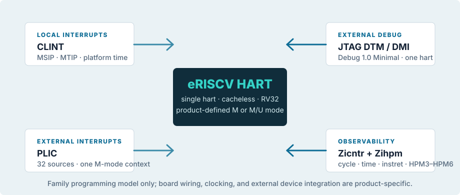

M0
Compact control
RV32IC control for deterministic, small-footprint embedded firmware.
- Machine mode
- Local IMEM and DTCM
- PLIC, CLINT, Debug, HPM
ENGINEERING DOCUMENTATION REVIEW SET 1.0
A single technical entry point for the eRISCV-M0, eRISCV-M1, and eRISCV-M2 microcontroller family.

01 / PRELIMINARY PRODUCT DATASHEETS
Each datasheet fixes a specific architectural configuration while the shared programming model and platform contracts remain stable across the family.
M0
RV32IC control for deterministic, small-footprint embedded firmware.
M1
RV32IMC control with user mode and physical memory protection.
M2
RV32IMFC with shared System SRAM and firewall-restricted DMA.
02 / PRODUCT SELECTION
Selection is based on architectural needs, not on an implied frequency, power, package, or availability tier.

Choose M2 for RV32F, Zcf, standard B, shared System SRAM, or the one-channel generic DMA contract.
Choose M1 for RV32M, U-mode, MPRV, and the 16-entry PMP contract.
Choose M0 for M-mode firmware that needs the common interrupt, debug, counter, and peripheral platform without M-extension or PMP hardware.
Firmware is M-mode only and software arithmetic is acceptable for multiply/divide-heavy paths.
Task isolation or protected boot/firmware regions are required, but floating point and shared DMA buffers are not.
Binary32 work, shared CPU/DMA buffers, or linked-descriptor transfers are part of the product requirement.
03 / COMMON ARCHITECTURE
The common platform fixes the services that firmware can carry across the family. Product pages add privilege, memory, compute, and data-movement capability without changing the basic interrupt, debug, or counter vocabulary.

CLINT provides MSIP and MTIP. The one-context PLIC presents eligible device interrupts as MEIP; source allocation is a product ABI.
All products expose one JTAG DTM/DMI Debug 1.0 Minimal target. RTL coverage does not yet claim board-level OpenOCD/GDB interoperability.
cycle, time, instret, and four programmable 64-bit counters HPM3–HPM6 use one family event encoding.
Execution uses directly addressed local memories. No family product supplies a cache, cacheable alias, or DMA cache-maintenance protocol.
RV32 little-endian execution, machine-mode traps, mret, CSR access, and product-defined M or M/U privilege boundaries.
Software enables the peripheral, configures PLIC priority and threshold, then claims, services, and completes the selected source.
HPM event identifiers remain stable across products; M1 and M2 additionally gate U-mode counter aliases through mcounteren.
Published maps define TCM, MMIO, and bus-error behavior. M2 System SRAM is explicitly non-cacheable and shared only where documented.
04 / CAPABILITY MATRIX
| Capability | M0 | M1 | M2 |
|---|---|---|---|
| ISA profile | RV32IC + Zicsr, Zifencei, Zicntr, Zihpm, Zihintpause | RV32IMC + Zicsr, Zifencei, Zicntr, Zihpm, Zihintpause | RV32IMFC + Zicsr, Zifencei, Zicntr, Zihpm, Zihintpause, Zba, Zbb, Zbs, Zcf |
| ABI | ilp32 | ilp32 | ilp32f |
| Privilege modes | M | M, U | M, U |
| Integer multiply / divide | Software library routines | RV32M hardware | RV32M hardware |
| PMP | — | 16 entries | 16 entries |
| Floating point | — | — | RV32F binary32; Zcf memory operations |
| CPU-local TCM | 64 KiB ITCM + 64 KiB DTCM | 64 KiB ITCM + 64 KiB DTCM | 128 KiB ITCM + 128 KiB DTCM |
| Shared System SRAM | — | — | 512 KiB; eight 64 KiB banks |
| Generic DMA | — | — | One channel; direct, descriptors, fixed UART0 TX |
| Common platform | CLINT, 32-source PLIC, Debug 1.0 Minimal over JTAG, four 64-bit programmable HPM counters | ||
| Shared exclusions | Caches, MMU, S-mode, atomics, AIA, custom ISA instructions; package, electrical, and availability data are not yet published | ||
05 / SOFTWARE
Each product owns a BSP, linker script, startup sequence, and image-generation flow. Software must select the exact product ISA/ABI shown above; it must not rely on a generic rv32imac default.
isa.mk fixes the product -march and ABI: M0/M1 use ilp32; M2 uses ilp32f.crt0 installs the trap entry and initializes data; product linker scripts define ITCM, DTCM, boot, and—on M2—optional System SRAM buffer placement.mcounteren policy. M2 floating-point code enables mstatus.FS; DMA buffers and descriptors reside in System SRAM.All products provide startup, traps, linker definitions, UART, GPIO, timer, SPI, CLINT, PLIC, and watchdog programming surfaces.
FreeRTOS and Zephyr collateral are development and simulation profiles. They are not a board-qualified or production-support claim.
The current FreeRTOS profiles retain the integer ABI until FP register and FCSR task-context save/restore is defined. DMA software uses non-cacheable System SRAM ownership rules.
06 / DOCUMENTATION SYSTEM
Selection, positioning, capability matrix, and explicit exclusions.
Architecture configurations, capacities, interfaces, and explicit exclusions for M0, M1, and M2. Package and electrical data remain unannounced.
Programming model, exact ISA/ABI declarations, address map, interrupts, debug, and PLIC source allocation. Architecture →
Routed FPGA evidence, constraints boundary, and board evidence plan. FPGA evaluation → · Board/JTAG →
Toolchain, BSP, linker, examples, RTOS boundaries, and reproducible workflows. Software guide →
Controlled Dhrystone conditions, raw-cycle results, and profile-level attribution for retained core optimizations. Performance evidence →
Evidence hierarchy, release boundaries, and correction rules. Verification guide →
REVIEW GATE
Next publication gates are register-level specification generation and physical-board evidence. This product manual is the reader-facing family guide; source-authoring collateral is intentionally kept outside the published site.